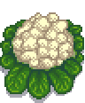
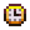
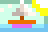
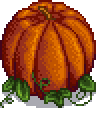

*해당 이미지의 거대 작물은 3 x 3 칸의 같은 작물이 모두 완전히 자란 상태일 때 낮은 확률로 생성됩니다.*

봄 작물
 성장 시간: 7일
가격: 80g
 계절: 봄
계절: 봄
*해당 이미지의 거대 작물은 3 x 3 칸의 같은 작물이 모두 완전히 자란 상태일 때 낮은 확률로 생성됩니다.*

여름 작물
성장 시간: 11일
가격: 60g
 계절: 여름
*해당 이미지의 거대 작물은 3 x 3 칸의 같은 작물이 모두 완전히 자란 상태일 때 낮은 확률로 생성됩니다.*

가을 작물
성장 시간: 10일
가격: 90g
 계절: 가을
계절: 가을
*해당 이미지의 거대 작물은 3 x 3 칸의 같은 작물이 모두 완전히 자란 상태일 때 낮은 확률로 생성됩니다.*

겨울 작물
성장 시간: 14일
가격: 100g
 계절: 겨울
계절: 겨울